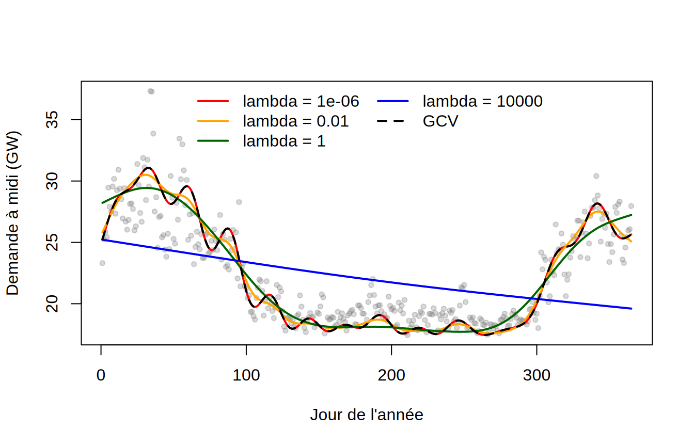
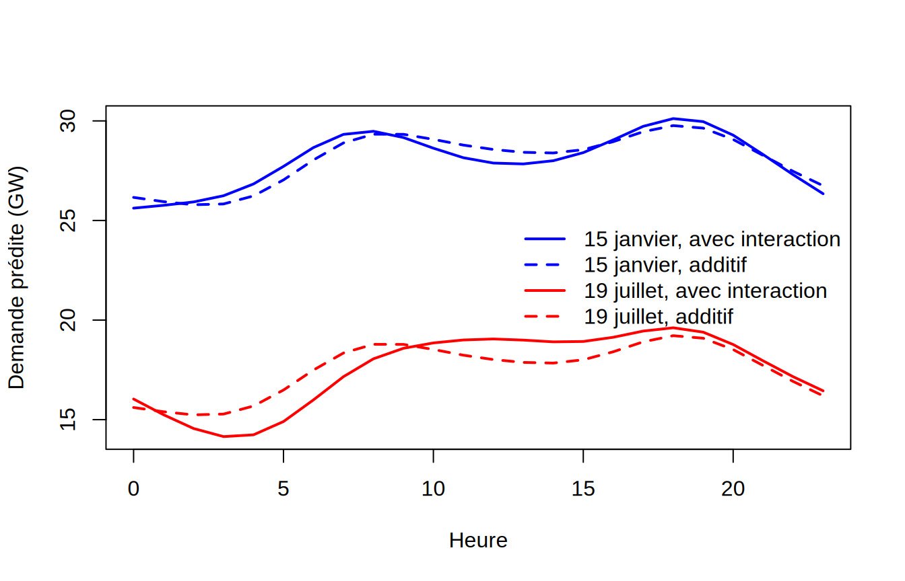
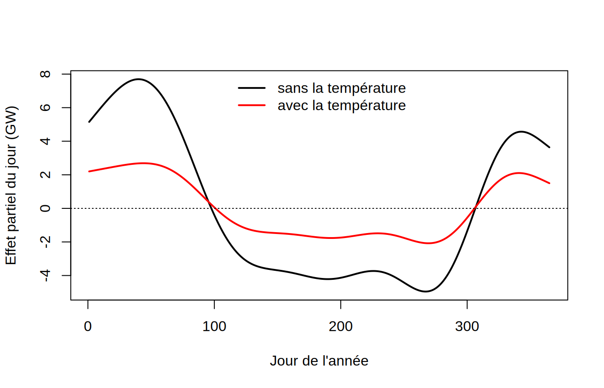
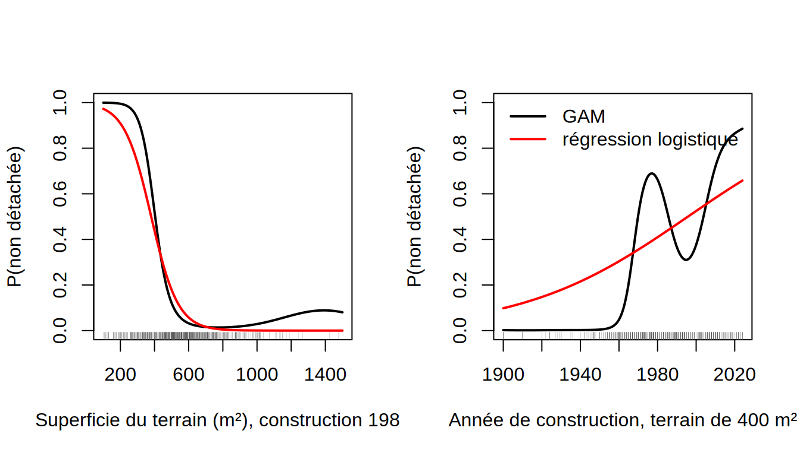

Les réponses ci-dessous sont une proposition de solution. Les valeurs numériques issues de la validation croisée dépendent de la partition tirée ; des écarts mineurs avec vos résultats sont normaux.
Aucun des deux effets n’est linéaire. L’effet de l’heure est le cycle journalier de la consommation : creux vers 3 h du matin, montée rapide au réveil jusqu’à une première pointe vers 8-9 h, légère baisse en milieu de journée, puis une seconde pointe vers 18 h (retour à la maison, souper, éclairage) et une descente en soirée ; l’amplitude est d’environ 4 GW. L’effet du jour de l’année est le cycle saisonnier : la demande est maximale en janvier-février (chauffage électrique, qui domine au Québec), descend d’une douzaine de GW jusqu’en juin, reste basse tout l’été avec une légère remontée en juillet-août (climatisation), puis remonte à l’automne. Ces deux courbes ont chacune plusieurs changements de direction : un modèle linéaire en heure_locale et jour ne pourrait représenter ni l’un ni l’autre, et il faudrait des polynômes de degré élevé pour s’en approcher. Le GAM estime la forme de chaque effet sans qu’on ait à la spécifier.
2. Degrés de liberté effectifs, déviance expliquée et tests
Chaque terme est construit avec \(k = 10\) fonctions de base, soit 9 degrés de liberté après la contrainte d’identifiabilité. Les deux termes en utilisent presque la totalité (8.83 pour l’heure et 8.99 pour le jour) : la pénalisation n’a presque rien lissé, ce qui signifie que les données réclament plus de flexibilité que la base n’en offre. La déviance expliquée est de 85.4 %. Les tests approximatifs de \(H_0 : f_j \equiv 0\) rejettent sans ambiguïté pour les deux variables (valeurs-p nulles à la précision de l’affichage), avec une statistique \(F\) dix fois plus grande pour le jour de l’année, dont l’effet a la plus grande amplitude.
Quand un terme sature sa base, il faut augmenter \(k\) (par exemple s(jour, k = 30)) et vérifier que les degrés de liberté effectifs choisis par le GCV se stabilisent nettement sous la nouvelle limite ; gam.check(mod1) fait ce diagnostic. C’est l’objet du point 4.
3. Comparaison avec des modèles paramétriques
mod.lm <-lm(demande ~ heure_locale + jour, data = h2023)mod.poly <-lm(demande ~poly(heure_locale, 5) +poly(jour, 5), data = h2023)AIC(mod1, mod.lm, mod.poly)
Pour la validation croisée, on écrit une fonction générique qui prend une partition en blocs et une fonction d’ajustement, et on l’applique d’abord à des blocs tirés au hasard, puis à des blocs temporels d’environ cinq semaines consécutives (10 blocs sur l’année).
Avec des blocs aléatoires, le GAM l’emporte très largement : son erreur de validation croisée (3.65 GW²) est 6 fois plus petite que celle du modèle linéaire et 1.4 fois plus petite que celle du polynôme ; l’AIC donne le même classement.
Mais ces chiffres répondent à une question étrange : « sachant la demande de toutes les autres heures de l’année, y compris l’heure d’avant et l’heure d’après, à quel point peut-on deviner celle-ci? » Les heures consécutives sont très corrélées (même météo, même journée), et chaque bloc test est entouré d’heures d’entraînement qui lui ressemblent. Avec des blocs de cinq semaines consécutives, on retire tout un morceau de l’année, et le modèle doit prédire une saison qu’il n’a jamais vue : l’erreur du GAM passe de 3.65 à 8.99 GW², et celle du polynôme explose (de 5.1 à 35.6 GW²), parce qu’un polynôme de degré 5 en jour extrapole très mal sur un trou de cinq semaines. L’écart entre les deux estimations n’est donc pas le même pour tous les modèles : il est d’autant plus grand que le modèle est flexible dans la direction du temps. La validation croisée par blocs temporels est celle qui répond à la question « comment ce modèle prédirait-il la demande d’une période future? », et même elle reste optimiste, puisque les blocs retirés sont encadrés par des données des deux côtés. Pour prédire l’année 2024, il faudrait entraîner sur 2019-2023 et tester sur 2024.
4. Rôle du paramètre de lissage
mod.k30 <-gam(demande ~s(heure_locale) +s(jour, k =30), data = h2023)c(edf.jour =summary(mod.k30)$edf[2], sp.jour = mod.k30$sp[2])
lambdas <-c(1e-6, 1e-2, 1, 1e4)xg <-data.frame(heure_locale =12, jour =1:365)plot(demande ~ jour, data =subset(h2023, heure_locale ==12), pch =20, col =adjustcolor("grey50", 0.3),xlab ="Jour de l'année", ylab ="Demande à midi (GW)")couleurs <-c("red", "orange", "darkgreen", "blue")for (j inseq_along(lambdas)) { m <-gam(demande ~s(heure_locale) +s(jour, k =30), sp =c(mod.k30$sp[1], lambdas[j]), data = h2023)lines(xg$jour, predict(m, xg), col = couleurs[j], lwd =2)}lines(xg$jour, predict(mod.k30, xg), col ="black", lwd =2, lty =2)legend("top", c(paste("lambda =", lambdas), "GCV"), col =c(couleurs, "black"), lwd =2,lty =c(1, 1, 1, 1, 2), bty ="n", ncol =2)

sapply(lambdas, function(l)summary(gam(demande ~s(heure_locale) +s(jour, k =30), sp =c(mod.k30$sp[1], l), data = h2023))$edf[2])
[1] 28.997737 20.671829 7.220751 1.040778
Le paramètre \(\lambda\) multiplie la pénalité \(\int f''(t)^2\,dt\). Avec \(\lambda \to 0\), la pénalité disparaît et la courbe utilise tous ses degrés de liberté (29 avec \(k = 30\)) : elle suit les fluctuations de la demande d’une semaine à l’autre (vagues de froid de février, canicule de juillet). Avec \(\lambda \to \infty\), la pénalité interdit toute courbure et \(f\) est ramenée à une droite (un degré de liberté effectif) : la saisonnalité disparaît. Entre les deux, \(\lambda\) règle continûment la complexité, et les degrés de liberté effectifs passent de 29 à 1.
Avec la base enrichie, le GCV retient 28.9 degrés de liberté effectifs, encore presque la totalité des 29 disponibles. Ce n’est pas une anomalie : avec 8759 observations très peu bruitées (les heures voisines se ressemblent), chaque degré de liberté supplémentaire réduit l’erreur de prédiction plus qu’il n’augmente la variance, et le GCV voit un signal réel dans les vagues de froid et les canicules. La courbe est « rugueuse » parce que la demande l’est vraiment : le vrai facteur explicatif n’est pas le jour de l’année mais la température, qui fluctue d’un jour à l’autre. Il faudrait \(k\) encore plus grand pour que le GCV se stabilise, ou, mieux, remplacer ce terme par ce qu’il essaie d’imiter (point 6).
5. Interaction entre l’heure et le jour
mod.te <-gam(demande ~te(heure_locale, jour), data = h2023)mod.ti <-gam(demande ~s(heure_locale) +s(jour) +ti(heure_locale, jour), data = h2023)AIC(mod1, mod.te, mod.ti)
Dans mod.ti, le terme ti(heure_locale, jour) est l’interaction pure, orthogonale aux effets principaux : son test répond directement à la question de l’additivité. Il est très significatif, avec une quinzaine de degrés de liberté effectifs, et l’AIC baisse de 746 par rapport au modèle additif. L’hypothèse d’additivité ne tient donc pas : la forme du cycle journalier change au fil de l’année. Le modèle te est moins bon ici que mod.ti (AIC plus élevé) simplement parce que sa base par défaut (5 × 5) est trop pauvre pour les effets principaux, qui réclamaient déjà 9 degrés de liberté chacun ; avec te(heure_locale, jour, k = c(10, 10)), on retrouverait un ajustement équivalent.
xg <-data.frame(heure_locale =rep(0:23, 2), jour =rep(c(15, 200), each =24))pred.add <-predict(mod1, xg)pred.int <-predict(mod.ti, xg)plot(0:23, pred.int[1:24], type ="l", lwd =2, col ="blue", ylim =range(c(pred.add, pred.int)),xlab ="Heure", ylab ="Demande prédite (GW)")lines(0:23, pred.add[1:24], lwd =2, col ="blue", lty =2)lines(0:23, pred.int[25:48], lwd =2, col ="red")lines(0:23, pred.add[25:48], lwd =2, col ="red", lty =2)legend("right", c("15 janvier, avec interaction", "15 janvier, additif", "19 juillet, avec interaction", "19 juillet, additif"),col =c("blue", "blue", "red", "red"), lty =c(1, 2, 1, 2), lwd =2, bty ="n")

Le modèle additif impose le même profil journalier décalé verticalement. Le modèle avec interaction montre qu’en janvier, la pointe du matin est presque aussi haute que celle du soir et le creux de l’après-midi est marqué (le chauffage domine, avec des pointes au réveil et au retour à la maison), alors qu’en juillet le creux nocturne est plus profond, la montée du matin plus tardive, le milieu de journée reste sur un plateau (la climatisation suit la chaleur de l’après-midi) et seule la pointe du soir subsiste. Le modèle additif, qui décale le même profil, invente un creux d’après-midi en été et sous-estime la pointe du matin en hiver. L’interaction apporte donc une description plus fidèle, au prix d’une quinzaine de paramètres effectifs supplémentaires et, surtout, de la perte de l’interprétation séparée des deux effets : on ne peut plus parler de « l’effet de l’heure » sans préciser la saison, et il faut lire une surface plutôt que deux courbes.
L’ajout de la température fait passer la déviance expliquée de 85.4 à 96 % et fait chuter l’AIC de plus de 11 000. L’effet de la température a la forme de crosse de hockey du labo 1 : décroissance à peu près linéaire d’environ 0,5 GW par degré jusqu’à 20 °C, plancher entre 20 et 27 °C, légère remontée pour les heures les plus chaudes (climatisation). La courbe est ici un effet partiel, à heure et à jour fixés, alors que la courbe du labo 1 mélangeait l’effet de la température et tout ce qui varie avec elle au fil de l’année ; les deux se ressemblent beaucoup parce que la température est, de loin, le principal facteur saisonnier.
xg <-data.frame(heure_locale =12, jour =1:365, temp_ponderee =10)plot(xg$jour, predict(mod1, xg, type ="terms")[, "s(jour)"], type ="l", lwd =2,xlab ="Jour de l'année", ylab ="Effet partiel du jour (GW)")lines(xg$jour, predict(mod.temp, xg, type ="terms")[, "s(jour)"], lwd =2, col ="red")abline(h =0, lty =3)legend("top", c("sans la température", "avec la température"), col =c("black", "red"), lwd =2, bty ="n")

Une fois la température prise en compte, l’effet du jour de l’année conserve sa forme mais son amplitude est divisée par trois ou quatre (de 12 à environ 4 GW entre l’hiver et l’été) et sa statistique \(F\) est divisée par plus de dix. Le cycle saisonnier était surtout un effet de la température ; ce qui reste mesure tout ce qui varie avec la saison à température égale : la durée du jour (éclairage), les habitudes et le calendrier, la demande industrielle, et aussi les effets retardés de la température (une maison met du temps à se refroidir). C’est le sens d’un effet partiel dans un modèle additif : chaque courbe décrit l’effet d’une variable, les autres étant fixées.
Remarque : l’heure et le jour sont des variables cycliques (23 h est voisine de 0 h, le 31 décembre du 1er janvier), ce qu’aucun des modèles ci-dessus n’impose ; mgcv offre pour cela la base de splines cycliques s(heure_locale, bs = "cc"), qui force la continuité de la courbe et de ses dérivées aux deux bouts.
7. GAM logistique : maisons détachées ou non
maisons <-read.csv("../notes/Jeux de données/maisons_quebec.csv")maisons$non_detachee <-as.integer(maisons$lien_physique !="Détaché")table(maisons$lien_physique)
Détaché En rangée, plusieurs côtés
463 28
En rangée, un côté Jumelé
15 94
gam.log <-gam(non_detachee ~s(superficie_terrain_m2) +s(annee_construction),family = binomial, data = maisons)glm.log <-glm(non_detachee ~ superficie_terrain_m2 + annee_construction,family = binomial, data = maisons)summary(gam.log)$s.table
par(mfrow =c(1, 2))xg1 <-data.frame(superficie_terrain_m2 =seq(100, 1500, length.out =200), annee_construction =1985)plot(xg1$superficie_terrain_m2, predict(gam.log, xg1, type ="response"), type ="l", lwd =2, ylim =c(0, 1),xlab ="Superficie du terrain (m²), construction 1985", ylab ="P(non détachée)")lines(xg1$superficie_terrain_m2, predict(glm.log, xg1, type ="response"), lwd =2, col ="red")rug(maisons$superficie_terrain_m2[maisons$superficie_terrain_m2 <=1500], col =adjustcolor("grey30", 0.3))xg2 <-data.frame(superficie_terrain_m2 =400, annee_construction =seq(1900, 2024, length.out =200))plot(xg2$annee_construction, predict(gam.log, xg2, type ="response"), type ="l", lwd =2, ylim =c(0, 1),xlab ="Année de construction, terrain de 400 m²", ylab ="P(non détachée)")lines(xg2$annee_construction, predict(glm.log, xg2, type ="response"), lwd =2, col ="red")rug(maisons$annee_construction, col =adjustcolor("grey30", 0.3))legend("topleft", c("GAM", "régression logistique"), col =c("black", "red"), lwd =2, bty ="n")

Les deux fonctions lisses ont des degrés de liberté effectifs nettement supérieurs à 1 (3.7 pour la superficie du terrain et 7.1 pour l’année de construction) : la pénalisation n’a pas ramené les effets à des droites sur l’échelle logit, et l’AIC du GAM est inférieur de 91 à celui de la régression logistique. Les effets ne sont pas linéaires, et la régression logistique usuelle est inadéquate.
Les formes s’interprètent bien. Pour le terrain, la probabilité d’une maison jumelée ou en rangée est presque 1 sous 250 m², passe de 0,9 à 0,1 entre 300 et 500 m² et devient presque nulle au-delà de 600 m² : un terrain exigu est la signature d’une maison mitoyenne (la superficie médiane est de 330 m² pour les maisons non détachées contre 604 m² pour les détachées). Sur l’échelle logit, l’effet est presque linéaire jusqu’à 500 m² puis s’aplatit, ce qui explique le nombre modeste de degrés de liberté effectifs. C’est l’année de construction qui s’écarte le plus de la linéarité : l’effet est non monotone, très faible pour les maisons construites entre 1900 et 1955 (une seule maison non détachée sur 77 construites dans les années 1940-1950, l’époque des bungalows de banlieue), en hausse rapide durant les années 1960-1970 (l’arrivée des jumelés), avec un léger creux dans les années 1990, puis en hausse jusqu’aux constructions récentes, où les maisons de ville en rangée sont fréquentes (55 des 138 maisons construites depuis 2000). Avant 1900, l’effet remonte (six des dix maisons de cet âge sont en rangée, dans les quartiers anciens), mais la bande de confiance y est très large. Une droite sur l’échelle logit ne peut rendre ni le creux ni les plateaux ; d’où le gain d’AIC.
C’est l’inverse de l’exemple des notes, où la fonction lisse du diamètre avait exactement un degré de liberté et où le GAM se réduisait à la régression logistique. Le GAM joue dans les deux cas le même rôle diagnostique : on laisse les données choisir la forme fonctionnelle, et les degrés de liberté effectifs disent si un MLG paramétrique suffit (un degré de liberté) ou si la relation est réellement non linéaire (plusieurs, comme ici). Dans ce dernier cas, le GAM n’est pas qu’un diagnostic ; c’est le modèle à retenir, quitte à chercher ensuite une transformation ou des termes paramétriques qui en reproduisent la forme.